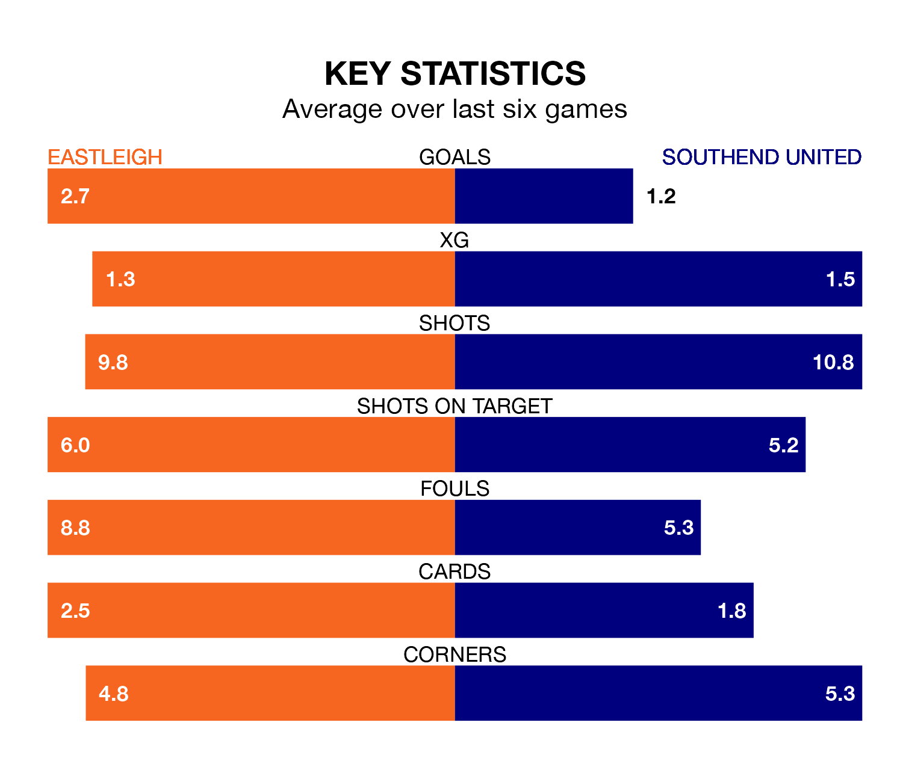

Eastleigh host Southend United on Saturday at the Silverlake Stadium in National League.
In their last league match, on January 1, Eastleigh drew with Dagenham and Redbridge 4-4 at home, with goals from Paul Leon Miller McCallum (three) and Jayden John-Lloyd Harris.
Southend won, 3-0 at home against Halifax Town on January 6, with Gus Scott-Morriss (two) and Henry Sandat on the scoresheet.
In McCallum, Eastleigh have the league's most on-form striker so far this season. He has notched 22 goals in 21 appearances.
His goal rate of one every 83 minutes is quicker than that of Harry Cardwell, Southend's top scorer with a goal every 156 minutes, and a total of 12 goals in 21 games.
With 46 goals in 26 games so far this season, the Spitfires are scoring more than average in the league with 1.8 goals per game. But they are conceding more than average too, letting in 49 goals at a rate of 1.9 per game.
United are also above average scorers, with 1.7 goals per game, compared to a league average of 1.5. They have conceded 1.1 goals per game.
The Shrimpers are seventh in the table after 26 games, of which they have won 12 and drawn five, earning 41 points.
The home team are five places behind the visitors in 12th, with 10 wins and seven draws putting them on 37 points.
Eastleigh are in mixed form in National League, with three wins and a draw from their last six games.
With two wins and a draw over that period, Southend's form is worse – they have taken seven points from 18, compared to Eastleigh's 10.
Over the last year, Eastleigh and Southend have played each other twice. They won one each.
Their last meeting was on August 25, when Southend won 2-0 at home.
Updated: 15:34, 08/01/24